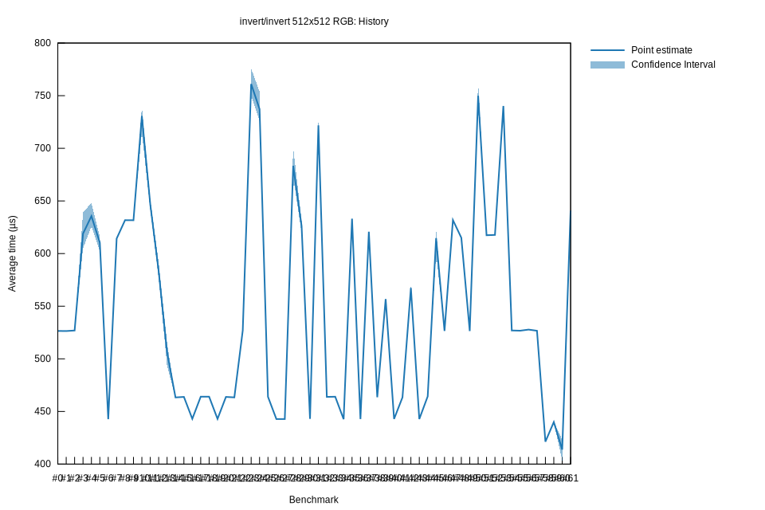

# 72022-11-18T21:49:42Z
|
Lower Bound |
Estimate |
Upper Bound |
| Value: |
631.71µs |
631.73µs |
631.78µs |
| Change in Value: |
+42.695% |
+42.711% |
+42.727% |
No change in performance detected.
# 62022-11-04T20:56:59Z
|
Lower Bound |
Estimate |
Upper Bound |
| Value: |
442.66µs |
442.69µs |
442.74µs |
| Change in Value: |
-28.130% |
-27.148% |
-26.201% |
No change in performance detected.
# 52022-09-02T22:47:30Z
|
Lower Bound |
Estimate |
Upper Bound |
| Value: |
602.36µs |
610.33µs |
615.57µs |
| Change in Value: |
-6.2322% |
-3.9831% |
-1.6335% |
No change in performance detected.
# 42022-08-16T22:58:38Z
|
Lower Bound |
Estimate |
Upper Bound |
| Value: |
625.74µs |
635.63µs |
648.10µs |
| Change in Value: |
-2.0925% |
+1.3503% |
+4.4889% |
Change within noise threshold.
# 32022-08-16T22:32:03Z
|
Lower Bound |
Estimate |
Upper Bound |
| Value: |
604.91µs |
618.92µs |
639.07µs |
| Change in Value: |
+15.369% |
+18.503% |
+21.360% |
No change in performance detected.
# 22022-08-16T01:50:07Z
|
Lower Bound |
Estimate |
Upper Bound |
| Value: |
526.81µs |
526.91µs |
527.03µs |
| Change in Value: |
+0.0906% |
+0.1008% |
+0.1120% |
No change in performance detected.
# 12022-08-16T01:10:51Z
|
Lower Bound |
Estimate |
Upper Bound |
| Value: |
526.39µs |
526.40µs |
526.42µs |
| Change in Value: |
-0.0231% |
-0.0159% |
-0.0095% |
No change in performance detected.
# 02022-08-16T00:51:37Z
|
Lower Bound |
Estimate |
Upper Bound |
| Value: |
526.46µs |
526.49µs |
526.53µs |